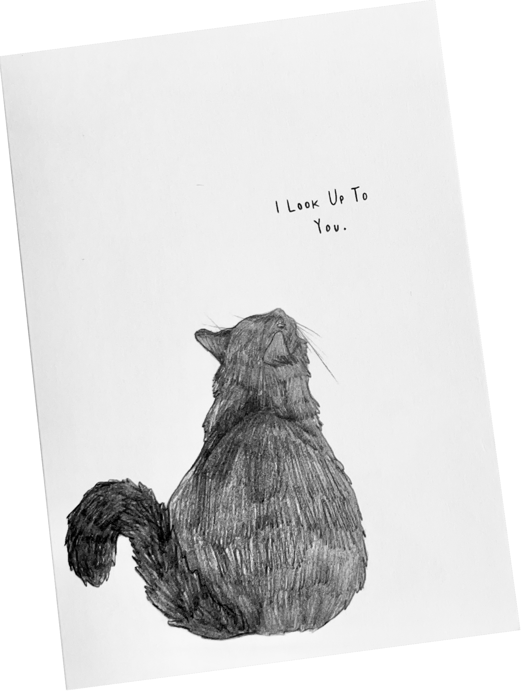
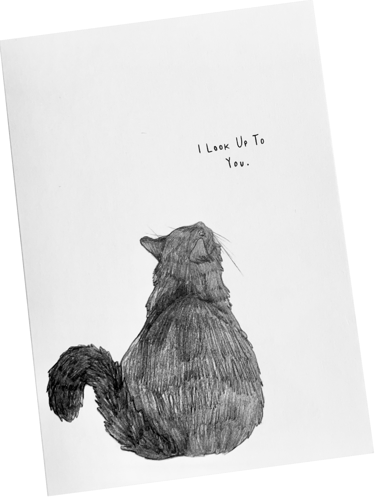
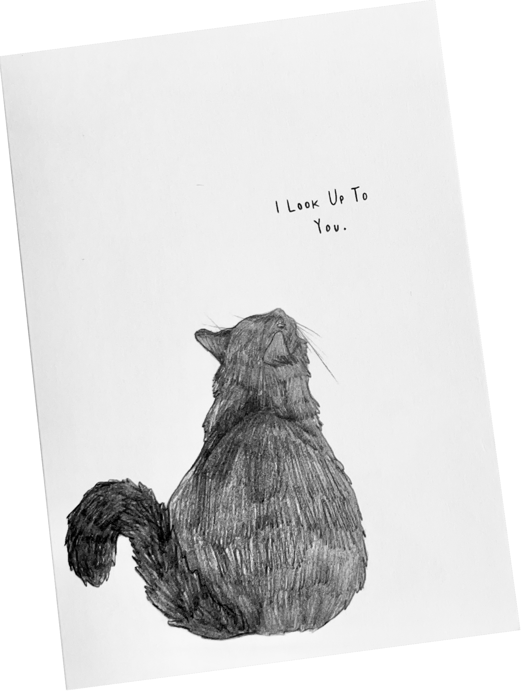

I designed these cards after I saw my mother, a veterinarian, sending out a condolence card to a client who's pet she recently had to put to sleep. While the occasion was sad, I thought it was sweet to celebrate the life of a well loved companion with a beautiful card. These cards were made for any kind of occasion, whether it be a birthday card, a condolence card, or just because! All of the cards were hand drawn with pencil, scanned into a computer, and printed by a stationary company.
